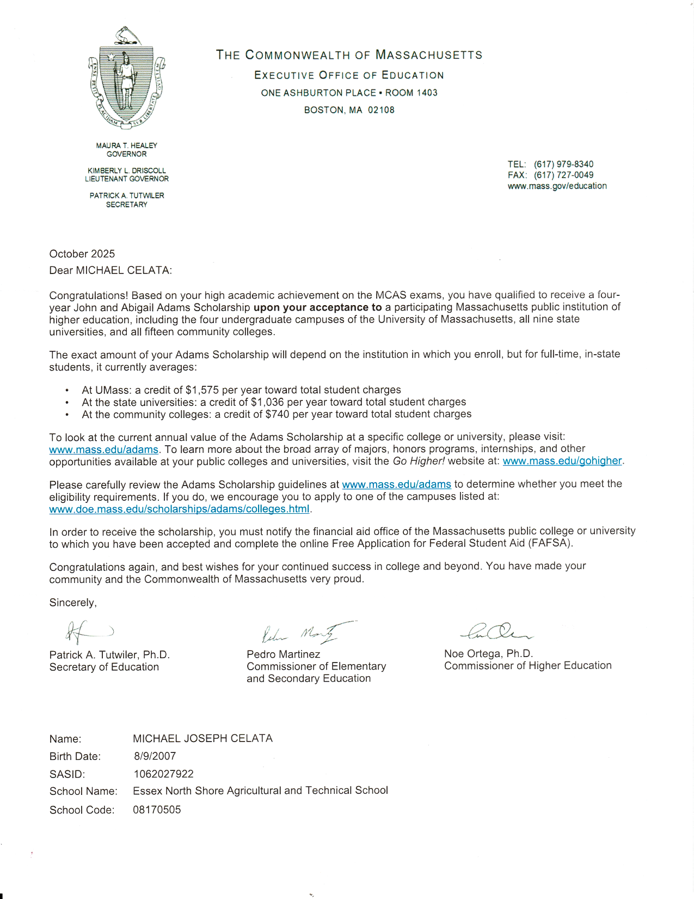
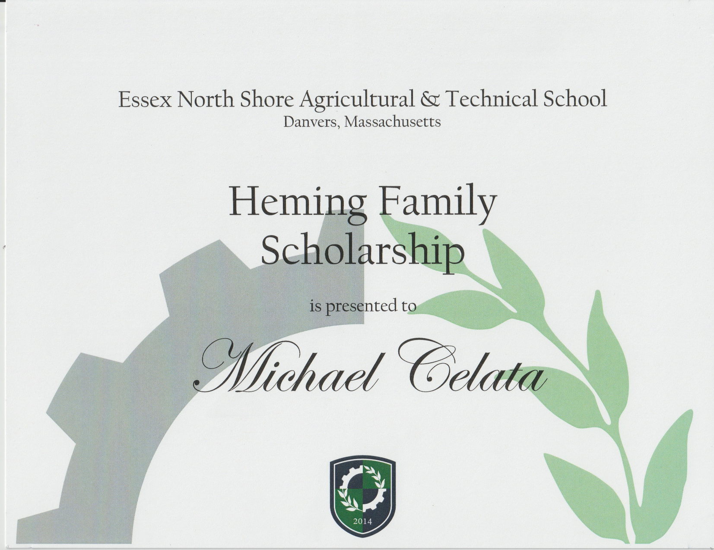
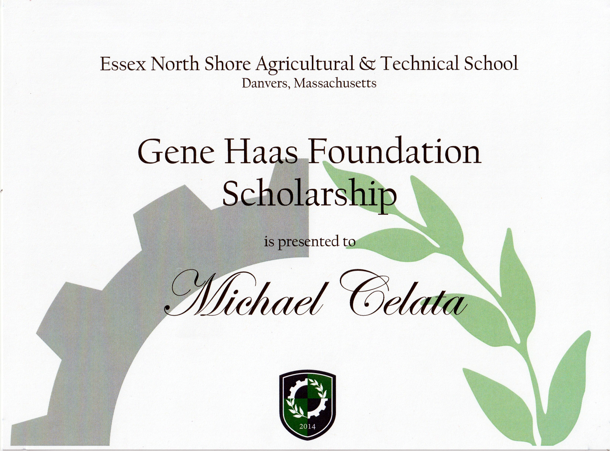
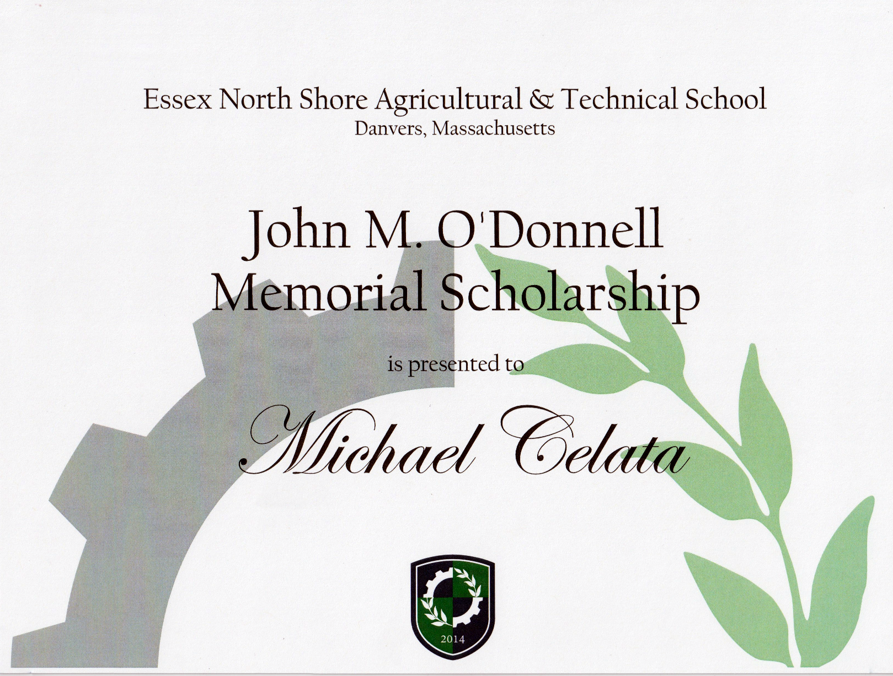
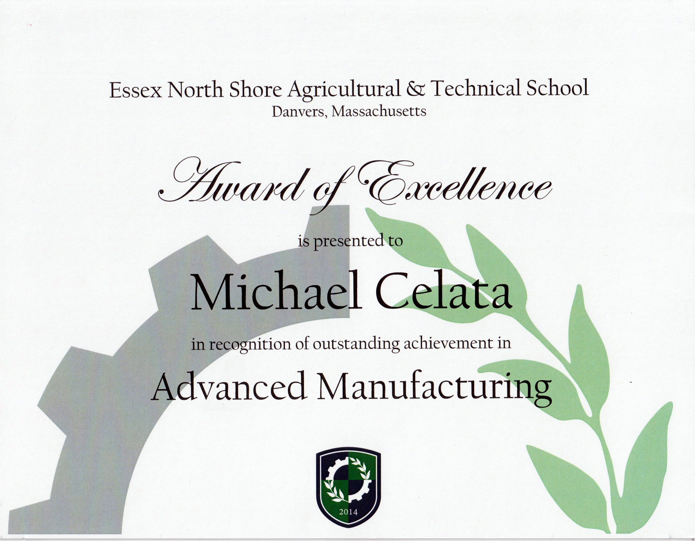

Awards & Scholarships
John & Abigail Adams Scholarship

This Scholarship was awarded due to my high-achieving performance on the Massachusetts Comprehensive Assessment System (MCAS) for Massachusetts
Heming Family Scholarship

The Heming Family Scholarship fund seeks those excited about STEM who are determined to find a way to grow and succeed in their lives through education and giving back. They are most excited about the aerospace, automotive, transportation, engine, and construction and mining equipment industries. Research, development, design, testing, manufacturing, and servicing in those areas provide rewarding careers
Gene Haas Foundation Scholarship

The Gene Haas Foundation is a foundation committed to manufacturing education. The primary goal is to build skills in the machining industry by providing scholarships for CNC machine technology students.
John M O'Donnell Memorial Scholarship

Johnny O’Donnell was the beloved brother-in-law to our school guidance counselor, Mrs. Casey O’Donnell. Johnny was caring, supportive and always smiling from ear-to-ear. After graduating from Lynnfield High School, Johnny spent time at North Shore Technical High School in their Life Skills program and made quite the impression there for a short period of time while learning some of the trades and skills until his sudden passing at age 19 in December of 2003. The John M. O'Donnell Memorial Scholarship is awarded to a student who has grown significantly as an individual during their four years at Essex Tech
Advanced Manufacturing Award of Excellence

Advanced Manufacturing honors a senior who represents the
highest degree of competency in their chosen program with a CTAE Program Excellence
Award. This award is presented to a student who possesses the following traits:
• Display a positive work ethic
• Demonstrate leadership in the program area, classroom or jobsite
• Demonstrate strong career, technical, or agricultural competencies
• Challenge themselves academically
• Are dedicated students to their chosen field of study